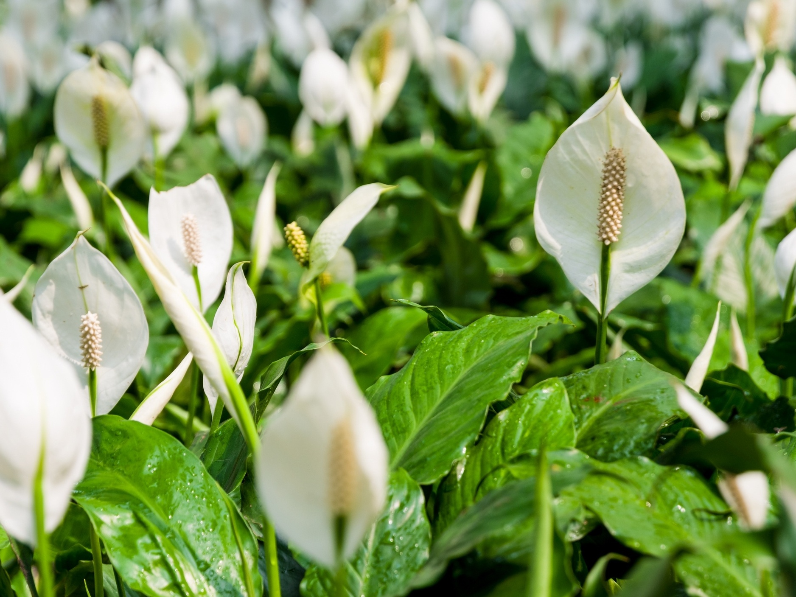
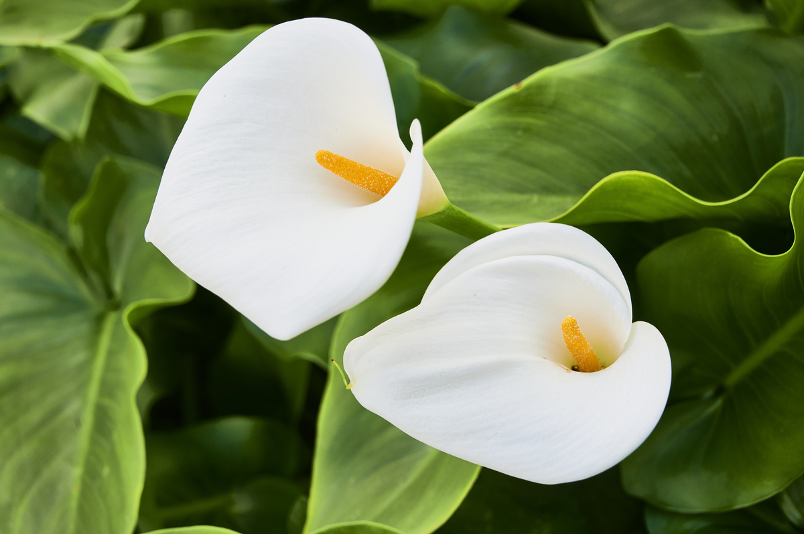
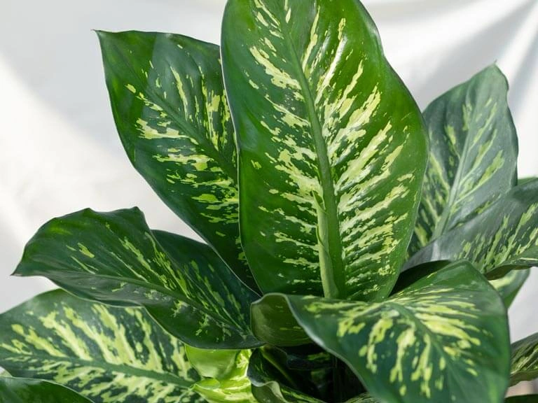
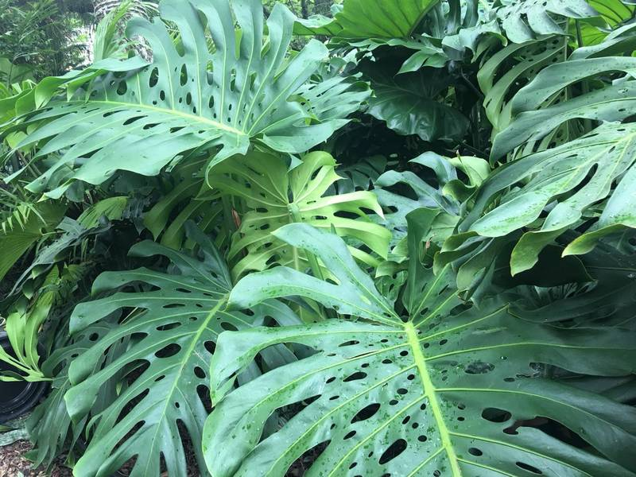
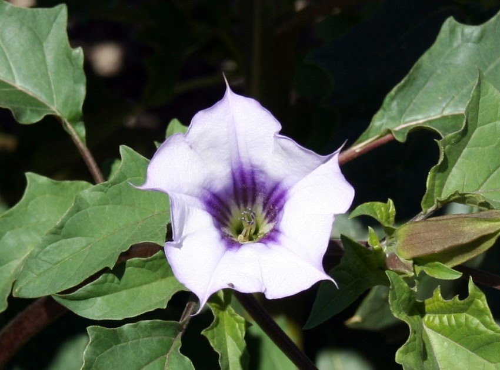

As plantas mais perigosas do Brasil!
Listarei o TOP 5 plantas mais perigosas que os brasileiros tem em casa
- Lírio-da-paz (Spathiphyllum wallisii)

Em primeiro lugar, os lírios-da-paz são belos e comuns em jardins. Porém, essa planta formosa contém a substância oxalato de cálcio, este que pode causar salivação excessiva, disfagia, vômitos e diarreia.
- Copo-de-leite (Zantedeschia aethiopica)

A Zantedeschia aethiopica pode nos causar danos ao ingeri-lo ou manuseá-lo, por ter oxalato de cálcio, que pode levar a queimação, dores, vômitos, diarreia e cálculos renais.
- Comigo-ninguém-pode (Dieffenbachia picta Schott)

Essa é uma das plantas mais comuns no Brasil. A comigo-ninguém-pode é totalmente tóxica, seja nas folhas, caule ou seiva. Porém, se alguém ingerir este vegetal, você pode parar no pronto-socorro, já que ela tem oxalato de cálcio
- Costela-de-Adão (Monstera deliciosa)

Muito usada como enfeite, a Monstera deliciosa pode causar excesso de salivação, diarreia e náuseas se for consumida. Em resumo, isso acontece porque ela também tem oxalato de cálcio. Porém, a costela-de-Adão é uma das plantas venenosas menos nocivas da lista.
- Estramônio (Datura stramonium)

Por último a conhecida figueira-do-inferno, este vegetal tem frutos espinhosos e um cheiro desagradável. Os princípios ativos da Datura stramonium são os alcaloides beladonados, que podem levar, na ingestão da planta, a náuseas, vômitos, delírios e, em casos mais perigosos, coma e morte.
Intoxicações por plantas em ruminantes no Brasil e no Uruguai
Veja agora os animais peçonhentos perigosos do Brasil